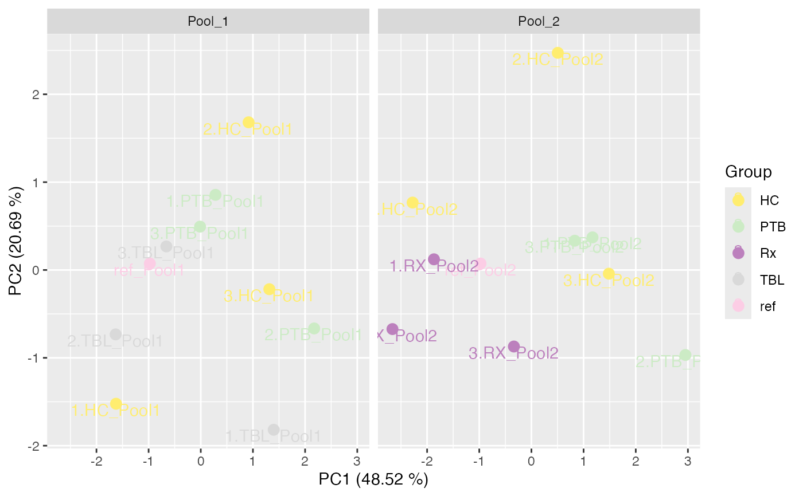
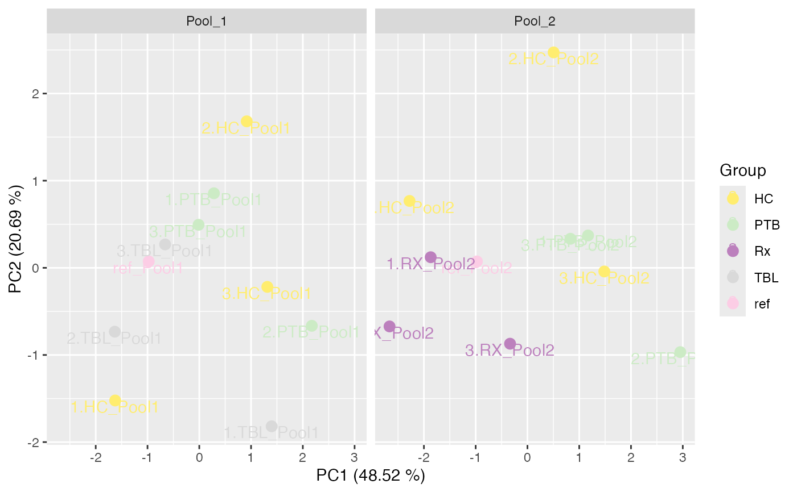

PCA plot of the normalized data
Usage
plot_PCA(
se,
ain = NULL,
color_by = NULL,
label_by = NULL,
shape_by = NULL,
facet_norm = TRUE,
facet_by = NULL,
ellipse = FALSE,
ncol = 3
)Arguments
- se
SummarizedExperiment containing all necessary information of the proteomics data set
- ain
Vector of strings which assay should be used as input (default NULL). If NULL then all normalization of the se object are plotted next to each other.
- color_by
String specifying the column to color the samples (If NULL, the condition column of the SummarizedExperiment object is used. If "No", no color bar added.)
- label_by
String specifying the column to label the samples (If NULL, the labels column of the SummarizedExperiment object is used. If "No", no labeling of samples done.)
- shape_by
String specifying the column to shape the samples (If NULL or "No", no shaping of samples is done.)
- facet_norm
Boolean specifying whether to facet by normalization methods (default TRUE). If FALSE, list of plots of the different normalized data is returned. However, then you can also facet by any column of the metadata.
- facet_by
String specifying the column to facet the samples (If facet = FALSE, the plot will not be faceted by the normalization methods, but instead a list of plots of each normalization method is returned. Then, the PCA plot can be faceted by any column of the metadata, for instance by "Batch". If facet_by is NULL or "No", no faceting is performed.)
- ellipse
Boolean to indicate if ellipses should be drawn
- ncol
Number of columns in plot (for faceting)
Examples
data(tuberculosis_TMT_se)
plot_PCA(tuberculosis_TMT_se, ain = NULL, color_by = NULL, label_by = NULL,
shape_by = "Pool",
facet_norm = TRUE, ncol = 3)
#> All assays of the SummarizedExperiment will be used.
#> Condition of SummarizedExperiment used!
#> Label of SummarizedExperiment used!
 plot_PCA(tuberculosis_TMT_se, ain = c("IRS_on_RobNorm"), color_by = "Group",
label_by = "Label", facet_norm = FALSE, facet_by = "Pool")
#> No shaping done.
#> $IRS_on_RobNorm

#>
plot_PCA(tuberculosis_TMT_se, ain = c("IRS_on_RobNorm"), color_by = "Group",
label_by = "Label", facet_norm = FALSE, facet_by = "Pool")
#> No shaping done.
#> $IRS_on_RobNorm

#>